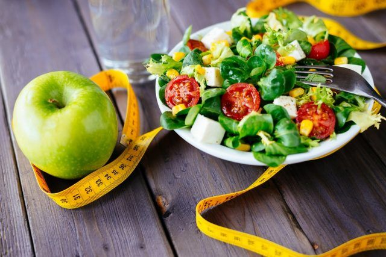
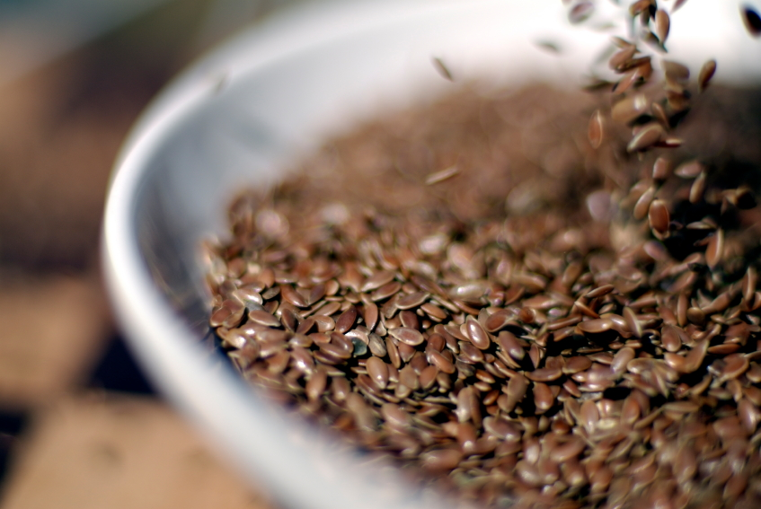
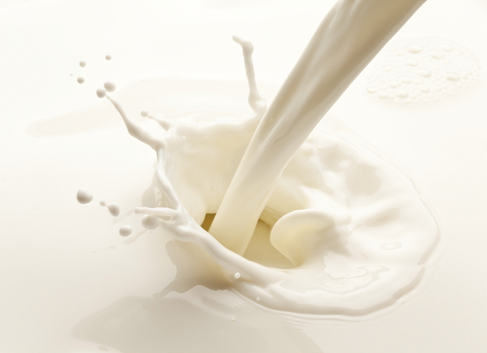
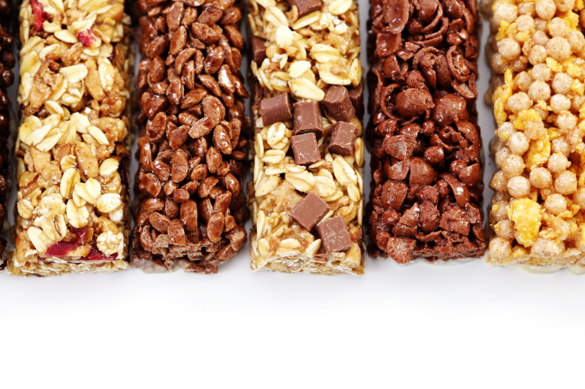

5 Healthy Foods That can Ruin Your Workout
There’s nothing worse than working up the motivation and carving out time for a workout, only to have your energy level crash mid-set. Maybe you didn’t get enough sleep, or maybe your mind is still on your work day. But another possibility is that the food you’re eating before you hit the gym or go for a run is responsible for your mid-workout slump.
If you know anything about fitness or taking care of your body, you know to avoid certain foods, especially if the gym is in your near future. You stay away from french fries and other greasy foods, and you drink more water than soda. Even if you’re following all the conventional wisdom, there might be a few healthy foods that are still tripping you up. Many foods that are good for weight loss, or health in general, still have the power to weaken your workout.
They say everything is good in moderation — but these foods should be consumed after your workout, not in the few hours before. In fact, most of these foods are recommended parts of your diet, but generally shouldn’t be eaten in the two hours leading up to your gym time. Here’s 10 foods to avoid — and a few tips on the foods you should be eating instead.
1. SALAD

Salad is supposed to be good any time, right? Not so much. If you’re eating salad the right way (as in, more vegetables than creamy dressing and croutons) then you’re setting yourself up for an uncomfortable workout. “A salad is healthy, but not the best choice before a workout,” Erica Giovinazzo, registered dietician and a coach at Brick CrossFit in New York, tells Stack. “All those veggies are high in fiber, and fiber slows down digestion. This could lead to bloating and gas during your workout.” This is especially noticeable if you’re doing a lot of running or biking, Manuel Villacorta, registered dietician and spokesperson for the American Dietetic Association, tells U.S. News & World Report.
For the exact same reason, crudité (the fancy name for a veggie plate) is also off the table, registered dietician Mary Hartley tells Shape. Nutritious vegetables like cauliflower, broccoli, and peppers are high in indigestible carbs that cause that balloon-like feeling in your gut. For your sake, and those around you, eat these well in advance (we’re talking several hours) or after your workout.
2. Flaxseeds

Flaxseeds are labeled as a superfood, but they won’t help you much if they’re a pre-gym staple. One of the reasons they’re so good for you otherwise is exactly why they’re bad for a workout: They’re very high in fiber, just like raw vegetables. In the same way, flaxseeds will likely cause bloating and gas during your workout, Stella Metsovas, a clinical nutritionist and diet expert, tells Shape. “You definitely want to limit the amount of fiber you take in two hours before and after exercising. In addition to flaxseeds, stay away from fiber supplements, bran, and high-fiber breads and opt for a mixture of protein and carbohydrates instead right before your workout,” Metsovas says.
However, don’t avoid flaxseeds and oil completely, as you’d be ignoring a healthy source of fats. Several nutrition experts recommend incorporating a few tablespoons of the oil in your diet (separated from exercise).
3. Green bananas

Bananas are often a snack food of choice before hitting the gym because of their potassium content and because they’re a healthy source of carbohydrates. But if you plan to eat one before you exercise, make sure it’s a yellow ripe one, and not one that looks like it’s just been picked from the tree.
The reason is because unripe green bananas have a high starch content, which is more difficult to digest, FitAddict writes. Hartley tells Shape that unripe fruit, much like vegetables, can cause bloating. Instead, ripe bananas (perhaps with a few brown spots) that don’t have any green at the stem are your best option. By this time, the ripening process has converted most of that starch into sugars that are absorbed more easily and used by your body as workout fuel.
4. Dairy

FitAddict writes that dairy products can lead to being more sluggish and sleepy during a workout, basically destroying your chances of pushing yourself to do an extra rep or run that final 10 minutes.
“Most athletes I work with have issues consuming dairy two hours before and after exercise,” Metsovas tells Shape. “I’d advise limiting the use of dairy if you feel lethargic, acidic, or experience excessive burping.”
5. Protein bars

Yes, protein is one of the things you definitely want to eat before a workout. But many protein bars are just as bad for you as a candy bar, Shape writes. Several options on the market have too many calories and not enough actual protein to fuel you up. If your bar has more than 200 calories, it might be a sign to look for an alternative or forgo the bars altogether.
“If your bar has less than 10g of protein, it could cause a drop in your blood sugar, leading you to feel more tired during your workout,” Rania Batayneh, a certified nutritionist and eating strategist, tells Shape. “To stay energized, look for a bar (that’s under 200 calories) with a protein to sugar ratio of 1:1.”
Men’s Fitness writes that the bars should also be high-carb. Protein burns slower than carbs in your body, so you need a combination of both to actually be helpful.